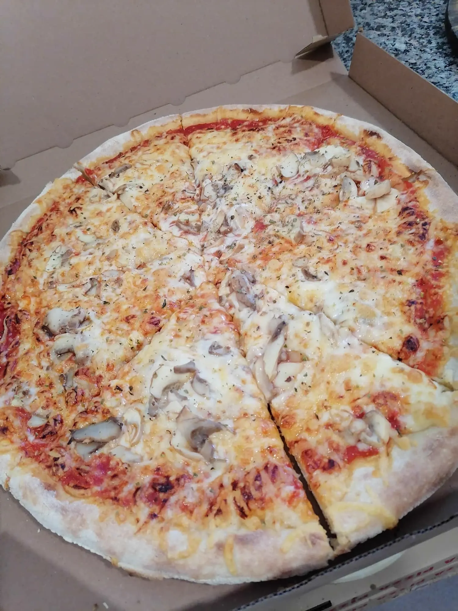
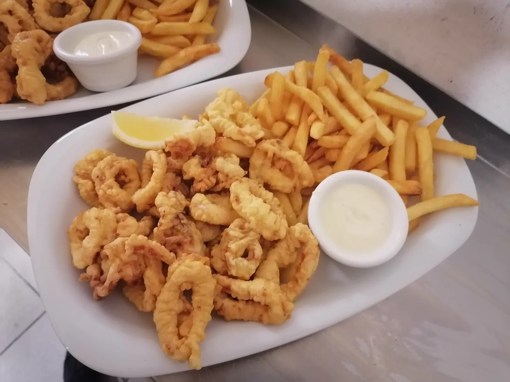
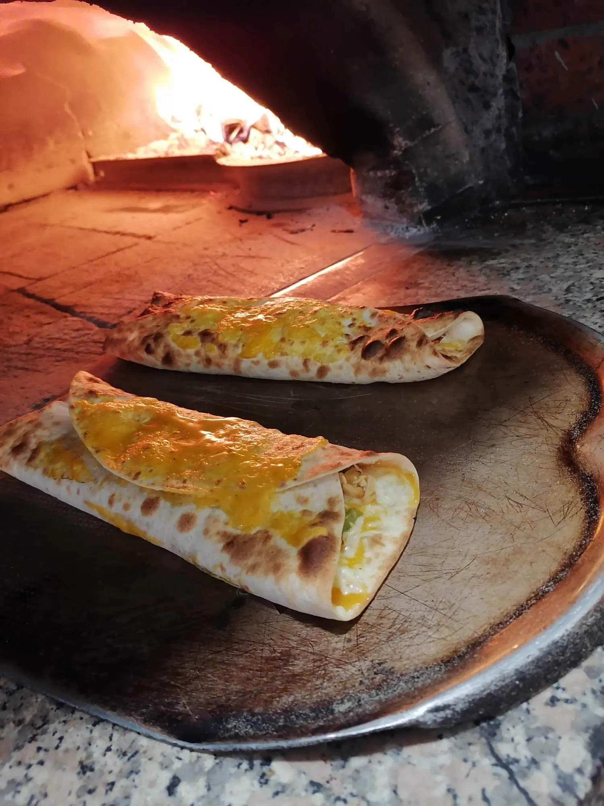
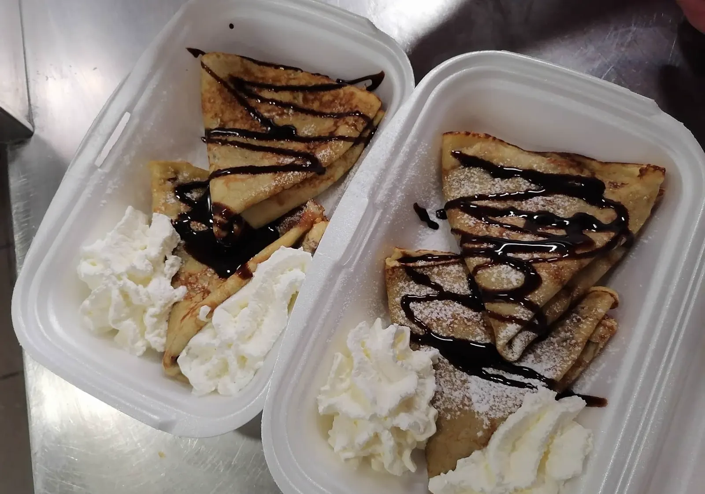

Domov / Jedilnik
Celoten jedilnik.
Prepisano po tiskanem jedilniku Gostilnice in picerije Briški. Cene v EUR.
Pice iz krušne peči.
Mala ø 33 cmVelika ø 36 cmMaxi ø 50 cm

| Pica | Mala | Velika | Maxi |
|---|---|---|---|
| Margerita pelati, sir, olive, origano | 9,00 € | 10,00 € | 19,00 € |
| Hišna pelati, sir, šunka, origano, sveža paprika, kisla smetana | 9,50 € | 10,50 € | 20,00 € |
| Klasika pelati, sir, šunka, šampinjoni, origano | 9,50 € | 10,50 € | 20,00 € |
| Koruzna pelati, sir, šunka, šampinjoni, koruza, origano | 9,50 € | 10,50 € | 20,00 € |
| Štirje letni časi pelati, sir, šunka, artičoke, kmečka salama, šampinjoni, origano | 10,50 € | 11,50 € | 22,00 € |
| S puranjo šunko pelati, sir, puranja šunka, šampinjoni, origano | 10,00 € | 11,00 € | 21,00 € |
| Poletna pelati, sir, šunka, kumara, paradižnik, koruza, paprika, origano | 10,00 € | 11,00 € | 21,00 € |
| Gobova pelati, sir, šampinjoni, origano | 9,00 € | 10,00 € | 19,00 € |
| Česnova pelati, sir, šunka, dor blue sir, sveži česen, origano | 9,50 € | 10,50 € | 20,00 € |
| Vegetarijanska pelati, sir, kumara, paradižnik, koruza, beluši, sveža paprika, olive, origano | 9,50 € | 10,50 € | 20,00 € |
| Bolognese pelati, sir, bolonjska omaka, origano | 9,50 € | 10,50 € | 20,00 € |
| Pica | Mala | Velika | Maxi |
|---|---|---|---|
| Domača pelati, sir, kraška panceta, kmečka salama, šampinjoni, olive, origano | 11,00 € | 12,00 € | 23,00 € |
| Lovska pelati, sir, prešana slanina, šampinjoni, kmečka salama, čebula, olive, origano | 11,00 € | 12,00 € | 23,00 € |
| Kraška pelati, sir, olive, kapre, svež pršut, origano | 11,00 € | 12,00 € | 23,00 € |
| Kranjska pelati, sir, slanina, panceta, trdo kuhano jajce, kranjska klobasa, hren, origano | 11,00 € | 12,00 € | 23,00 € |
| Pikantna pelati, sir, prešana slanina, pikantna salama, feferoni, tržaška omaka, origano | 10,50 € | 11,50 € | 22,00 € |
| Mehiška pelati, salsa, fižol, sir, šunka, mešana mehiška zelenjava, feferoni, nacho sir, origano | 11,00 € | 12,00 € | 23,00 € |
| S piščančjim kebabom pelati, sir, piščančji kebab, sveže zelje, paradižnik, čebula, kebab omaka | 11,00 € | 12,00 € | 23,00 € |
| Z rukolo pelati, sir, hamburška slanina, pršut, rukola, kisla smetana, origano | 11,00 € | 12,00 € | 23,00 € |
| Štirje siri pelati, štiri vrste sira, skuta, kisla smetana, origano | 10,50 € | 11,50 € | 22,00 € |
| Pica | Mala | Velika | Maxi |
|---|---|---|---|
| Morska pelati, sir, morski sadeži, tržaška omaka, origano | 10,50 € | 11,50 € | 22,00 € |
| Ribič pelati, sir, tunina, slani fileti, tržaška omaka, origano | 10,50 € | 11,50 € | 22,00 € |
| Tunina pelati, sir, tunina, olive, tržaška omaka, origano | 10,50 € | 11,50 € | 22,00 € |
Cene v EUR.
Jedi z žara.
V ponudbi tudi.

Testenine (špageti).
Mehiške tortilje.
Vse z nadevom po izbiri, sirom, papriko, nacho sirom in tacom. Alergeni: 1, 3, 7.

Juhe in sestavljeni meniji.
| Meni | Svinjski | Piščančji |
|---|---|---|
| Dunajski zrezek priloga: pomfri ali pražen krompir + solata | 14,00 € | 15,00 € |
| Ljubljanski zrezek priloga: pomfri ali pražen krompir + solata | 17,00 € | 18,00 € |
| Zrezek z žara v gobovi omaki priloga: pomfri ali pražen krompir + solata | 15,00 € | 16,00 € |
| Mesna plošča za dve osebi 4 ocvrti zrezki, 2 zrezka v gobovi omaki · priloge: pomfri, kuhana zelenjava, kroketi | 38,00 € | 40,00 € |
Priloge
Solate.
Zelena solata, radič, zelje, fižol, kumara, paradižnik, koruza, paprika.
Sladice.

Dodatki.
K pizzam
K solati
Alergeni
1 — žita8 — zrnje soje
2 — jajca9 — listna zelena
3 — mleko10 — gorčično seme in proizvodi iz njih
4 — oreščki11 — sezamovo seme in proizvodi iz njih
5 — arašidi12 — žveplov dioksid
6 — mehkužci in proizvodi iz njih13 — volčji bob
7 — ribe in proizvodi iz njih14 — raki in proizvodi iz njih
V vseh pizzah so možne sledi alergenov označenih z 1, 2, 3, 4 in 5.
V pici morska, ribič in pici s tunino so dodatno možne sledi alergenov 6, 7 in 14.
Cene v EUR.